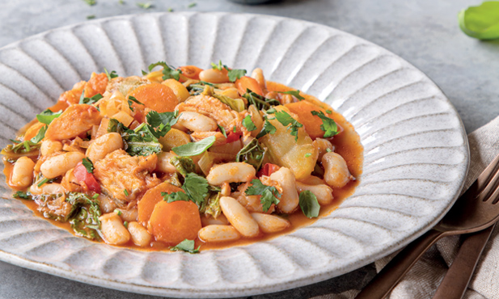

Feijoada do mar
Uma feijoada do mar é o prato tradicional perfeito para aproveitar as sobras de peixe.
| 2 convidados 10m Sobremesa Dificuldade baixa | |
|---|---|
| Ingredientes para fazer Feijoada do Mar | |
|
|
Passos para fazer Feijoada do Mar
1 - Coe as sobras de caldeirada com uma escumadeira e retire as peles e as espinhas ao peixe, se existirem. Reserve o caldo da caldeirada.
2 - Aloure a cebola no azeite quente e adicione a mistura de legumes para sopa e o sal. Tape o tacho e deixe suar em lume brando cerca de 5 minutos.
3 -Junte a polpa de tomate, refresque com o vinho branco e deixe ferver por mais 2 ou 3 minutos. Acrescente o caldo reservado da caldeirada e o feijão e ferva suavemente mais 10 minutos. Introduza as sobras da caldeirada, deixe aquecer e salpique com coentros e folhas de manjericão. Sirva de imediato.